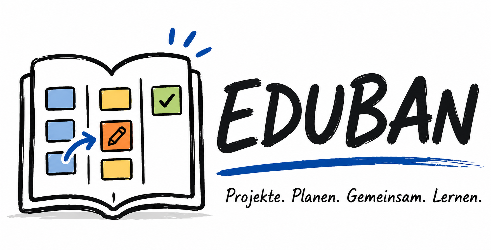

Kanban ist eine Methode zur Visualisierung und Steuerung von Arbeit. Der Begriff stammt aus dem Japanischen und bedeutet so viel wie „Signalkarte". Entwickelt wurde die Methode ursprünglich von Toyota in den 1950er Jahren – heute wird sie weltweit in Schulen, Unternehmen und von Einzelpersonen eingesetzt.
Die Grundidee: Aufgaben werden als Karten dargestellt und auf einem Board in Spalten angeordnet, die den aktuellen Status zeigen:
Ein zentrales Prinzip ist das WIP-Limit (Work in Progress). Es legt fest, wie viele Aufgaben gleichzeitig „In Bearbeitung" sein dürfen. Das klingt nach Einschränkung – ist aber ein wichtiges Werkzeug: Wer zu viele Dinge gleichzeitig beginnt, erledigt am Ende weniger. Das WIP-Limit zwingt dazu, angefangene Aufgaben zu Ende zu bringen, bevor neue begonnen werden.
Ein Kanban-Board macht den Arbeitsfluss für alle Beteiligten auf einen Blick sichtbar: Wo stockt es? Was ist erledigt? Wer arbeitet woran? Diese Transparenz ist besonders wertvoll bei Gruppenarbeiten und Projekten, bei denen mehrere Personen über einen längeren Zeitraum zusammenarbeiten.
EDUBAN Standalone funktioniert grundsätzlich lokal und ohne eigenes EDUBAN-Konto. Alle Daten bleiben zunächst auf dem jeweiligen Gerät. Der Austausch zwischen Tutor und Schülern läuft entweder über manuell weitergegebene Dateien oder optional über die Datenbank-Funktion. Schüler-Images und Rückgaben werden verschlüsselt gespeichert; offene Vorlagen sind nur für bewusst freigegebene Startboards gedacht:
Jedes Image ist verschlüsselt. Nur der Tutor (mit seinem privaten Tutor-Schlüssel) und die Schülerin oder der Schüler (mit der persönlichen Schüler-INI) können es öffnen. Kein Dritter kann die Inhalte lesen – auch wenn die Datei auf dem falschen Weg landet.
Noten werden nicht an Schülerinnen und Schüler zurückgegeben. Der Tutor sichert sie separat über „Noten sichern" und kann sie später mit „Noten wiederherstellen" erneut einspielen.
Beim ersten Öffnen der App gibst du deinen Namen ein. Danach erstellst du einmalig deine Schlüsseldateien (siehe Abschnitt Tutor-Schlüssel erstellen) – ganz ohne Masterpasswort. Der private Tutor-Schlüssel bleibt danach auf dem Gerät geladen: Speichern, Öffnen von Abgaben und Noten-Sicherung laufen komplett passwortfrei.
Auf einem neuen Gerät lädst du einfach deinen privaten Tutor-Schlüssel („INI laden" in der Seitenleiste) – mehr ist nicht nötig.
Wenn du die App erneut öffnest, landest du direkt in der App – Name und Tutor-Schlüssel sind gespeichert. Mit „Abmelden" in der Seitenleiste werden die lokalen Daten (inklusive Schlüssel) vom Gerät entfernt.
Die Anmeldung funktioniert ohne Passwort – deine persönliche Schüler-INI-Datei ist dein Schlüssel.
Einmalige Registrierung:
Anmelden: Auf demselben Gerät bleibst du automatisch angemeldet. Auf jedem anderen Gerät (oder nach dem Abmelden) wählst du einfach deine Schüler-INI aus – fertig.
Dann registrierst du dich mit der Verteil-INI des Tutors neu und bekommst eine neue Schüler-INI. Boards auf dem Gerät bleiben erhalten – aber ältere private Sicherungen können nur noch vom Tutor geöffnet werden. Also: Datei gut sichern (z. B. USB-Stick oder Schul-Cloud).
Ein Board ist dein Arbeitsbereich – zum Beispiel für ein Projekt, eine Klasse oder eine Aufgabensammlung. Die Seitenleiste öffnest du über den Menüknopf direkt neben dem Boardnamen. Dort klickst du auf „＋ Neues Board", um den Einrichtungsassistenten zu starten.
Der Assistent führt dich durch drei Schritte:
Nach der Erstellung enthält das Board drei Standardspalten: — Offen, — In Bearbeitung und — Fertig.
Board duplizieren: In der Seitenleiste erscheint beim Hovern über ein Board ein Kopier-Symbol. Ein Klick erstellt eine vollständige Kopie mit allen Spalten, Karten und Einstellungen.
Board löschen: Das Löschen kompletter Boards ist nur im Tutor-Modus möglich. Schülerinnen und Schüler erhalten dabei einen erklärenden Hinweis.
Board-Einstellungen: Ein Klick auf den Boardnamen öffnet ein Menü für Boardname, Lerngruppe und Personen. Tutoren können Personen dort umbenennen, hinzufügen oder löschen. Für Schülerinnen und Schüler sind diese Verwaltungsfunktionen gesperrt; sie erhalten stattdessen einen Hinweis, den Tutor zu fragen.
Jedes Board besteht aus Spalten, die den Status einer Aufgabe beschreiben. Du kannst beliebig viele eigene Spalten hinzufügen – klicke dafür auf „＋ Spalte hinzufügen" ganz rechts im Board.
Spalten können über das Mülleimer-Symbol gelöscht werden. Das Löschen kompletter Spalten ist aus Sicherheitsgründen nur im Tutor-Modus möglich. Achtung: Dabei werden auch alle Karten in dieser Spalte unwiderruflich gelöscht.
WIP-Limit: Die Spalte „In Bearbeitung" hat ein automatisches Limit für gleichzeitig aktive Aufgaben. Wenn das Limit erreicht ist, färbt sich die Spalte orange (eine Karte unter dem Limit) bzw. rot (Limit erreicht). Im roten Zustand können keine weiteren Karten hineingezogen werden.
Wenn du eine neue Spalte erstellst, fragt dich das System, ob dies die spezielle Voraussetzungen-Spalte werden soll. Diese eignet sich perfekt, um Vorarbeiten abzulegen, von denen andere Karten abhängig sind. Karten in dieser Spalte gelten für Abhängigkeiten und Meilensteine als erledigt, tauchen aber nicht in der Benotung auf.
Karten sind einzelne Aufgaben. Klicke auf „＋ Karte hinzufügen" unterhalb einer Spalte, um eine neue Karte zu erstellen. Beim Erstellen kannst du direkt eine Priorität wählen:
Per Doppelklick auf eine Karte (oder über das Stift-Symbol) öffnest du den Bearbeitungsdialog. Dort kannst du:
Wenn Meilensteine angelegt sind, zeigt jede Karte fett an, zu welcher Projektphase sie gehört. Diese Information erscheint sowohl auf der Karte im Board als auch im Bearbeitungsdialog.
Wird eine Karte im Hauptboard gelöscht, verschwindet sie nicht endgültig. Sie wird zuerst in die Ideenbox verschoben und kann von dort wieder ins Board zurückkehren oder endgültig gelöscht werden. Karten in der Fertig-Spalte können nicht gelöscht werden.
Die Ideenbox erreichst du über die Schaltfläche „Ideen" in der Leiste oberhalb des Boards. Dort sammelst du Karten, die noch nicht ins Board gehören, aber später wichtig werden können.
Neue Ideen haben wie normale Karten einen Titel, eine Beschreibung, eine Priorität, ein Fälligkeitsdatum, eine Zuweisung und eine Zeitschätzung. Du kannst sie jederzeit bearbeiten oder löschen.
Wenn eine Idee bereit ist, schiebst du sie mit „In Vorbereitung" direkt in die gleichnamige Spalte. Falls diese Spalte noch nicht existiert, legt EDUBAN sie automatisch an.
Auch entfernte Board-Karten landen zuerst hier. Erst wenn du eine Karte in der Ideenbox löschst, ist sie endgültig entfernt.
Neue Boards enthalten bereits häufig gebrauchte Beispiele wie Boardmaster bestimmen, Rollen im Team verteilen, Recherchequellen sammeln und einen Zwischencheck einplanen.
Der Inhalt der Ideenbox gehört zum Board. Er wird zusammen mit dem Board gespeichert, dupliziert, im Text-Export ausgegeben und in EDUBAN-Images sowie Datenbank-Sicherungen mitgenommen.
Meilensteine sind Projektphasen, die nacheinander erreicht werden. Sie sind keine normalen Karten, sondern beschreiben grobe Etappen wie „Vorbereitung", „Produktentwurf" oder „Präsentation".
Du öffnest die Verwaltung über „Meilensteine" in der Leiste oberhalb des Boards. Jede Phase bekommt einen Namen, eine kurze Beschreibung und eine Liste von Kartenlabels, zum Beispiel A, B, C.
Eine Phase gilt als erreicht, sobald alle zugeordneten Karten in einer Fertig-Spalte liegen. Karten aus der Voraussetzungen-Spalte zählen für Meilensteine ebenfalls als erledigt, weil sie vorbereitende Rahmenbedingungen darstellen. Die Reihenfolge ist verbindlich: Spätere Phasen bleiben gesperrt, bis die vorherige Phase abgeschlossen ist. So entsteht eine klare Projektlogik statt einer bloßen Sammlung einzelner Aufgaben.
Auf dem Hauptbildschirm erscheinen die Projektphasen als Fortschrittsleiste. In der U-Bahn-Ansicht werden sie als sichtbare Phasengrenzen eingezeichnet: Ablaufkarten einer späteren Phase werden im Plan erst nach Abschluss der vorherigen Ablaufphase angeordnet. Übergeordnete, nicht verkettete Aufgaben wie Boardpflege werden daneben als phasenbegleitende Aufgaben gelistet und nicht in die Timeline übernommen.
Meilensteine gehören zum Board. Sie werden in Vorlagen, Images, Datenbank-Sicherungen, Text-Export und KI-Import mitgenommen.
Jede Karte hat ein Kommentarsystem. Schülerinnen und Schüler können Notizen hinterlassen; der Tutor kann direkt an der Karte Feedback geben – sichtbar nach der Rückgabe des Images.
Auf jeder Karte siehst du kleine Symbole, die den Kommentar-Status anzeigen:
Klicke auf eines dieser Symbole, um die Kommentarliste zu öffnen. Neuen Kommentar schreiben und mit Enter oder „Senden" abschicken.
Bei komplexen Projekten kann eine Aufgabe erst gestartet werden, wenn eine andere bereits erledigt ist. Dafür gibt es das Abhängigkeitssystem.
Das Ketten-Symbol auf jeder Karte zeigt den Status:
Ein Klick auf das Symbol öffnet die Verknüpfungsliste.
Es gibt zwei Wege, Karten zwischen Spalten zu verschieben:
1. Drag & Drop – Halte eine Karte gedrückt und ziehe sie in die gewünschte Spalte.
2. Pfeil-Buttons – Die Pfeile verschieben die Karte spaltenweise; sortieren innerhalb der Spalte.
Karten mit unerfüllten Voraussetzungen (rote Kette) können nicht nach rechts verschoben werden.
Beim Verschieben werden automatisch Zeitstempel gesetzt: Startdatum (erstes Verlassen von „Offen") und Enddatum (Eingang in „Fertig").
Zusammengehörige Aufgaben können verkettet werden – sie bilden dann einen gemeinsamen optischen Block und bewegen sich beim Verschieben immer gemeinsam.
Klicke auf das Link-Symbol in der Kartenleiste, um die Karte mit der darunterliegenden zu verbinden. Zum Lösen: zerbrochene Kette klicken.
Trotz Verkettung bleiben Karten intern eigenständig – im Notenmodul können weiterhin individuelle Noten vergeben werden.
Karten können über das Mülleimer-Symbol gelöscht werden. Du kannst nur eigene Karten löschen – also Karten, die dir zugewiesen sind oder keiner Person zugewiesen wurden. Tutoren können alle Karten löschen.
Karten in der Spalte „Fertig" sind in der Schüleransicht geschützt. Sie können dort nicht gelöscht oder wieder aus der Fertig-Spalte entfernt werden. Der Tutor kann eine fertige Karte ausnahmsweise zurückschieben, erhält vorher aber eine Warnung: Alle Prozessnoten, Aufwands-Gewichtungen und Bewertungskommentare dieser Karte werden dabei gelöscht. Wenn die Karte später erneut nach „Fertig" kommt, muss sie neu bewertet werden. Oft ist es pädagogisch besser, stattdessen eine neue Karte für Nacharbeiten anzulegen.
Öffne die Seitenleiste über den Menüknopf neben dem Boardnamen und klicke dort auf Einstellungen:
Alle Einstellungen werden lokal auf diesem Gerät gespeichert.
Das Kanban-Board hilft dir dabei, zeitliche Vorgaben nicht aus den Augen zu verlieren. Es gibt drei Arten von Fristen:
Für Tutoren sind Projekt-Deadline und Aging besonders wichtig, weil sie sichtbar machen, ob ein Projekt insgesamt im Zeitplan liegt und welche Aufgaben zu lange unbearbeitet bleiben. Die genaue Einstellung wird im Abschnitt Deadline & Aging steuern erklärt.
Ein komplexes Projekt ist wie der Nahverkehr einer Großstadt: Jedes Teammitglied fährt auf seiner eigenen Linie. Die Aufgaben sind die Stationen. Wenn Personen zusammenarbeiten, kreuzen sich ihre Linien an einer Umsteigestation. Muss jemand auf die Vorarbeit eines anderen warten, zeigt der Plan, wo es zu Verzögerungen kommt. Diese Metapher macht selbst komplizierteste Projektabläufe sofort intuitiv verständlich!
Klicke auf dem Hauptbildschirm auf das Zug-Symbol, um die U-Bahn-Ansicht zu öffnen. Diese Ansicht verwandelt dein Kanban-Board in einen intelligenten Liniennetzplan – ideal, um Engpässe und Abhängigkeiten sofort zu erkennen.
So liest du den Plan:
Wenn du mit der Maus über eine Station fährst (ohne zu klicken), dunkelt sich das restliche Netz ab und zeigt dir die genaue Kette der Abhängigkeiten für diese spezifische Aufgabe:
Je weiter entfernt eine Aufgabe in dieser Kette ist, desto schwächer leuchtet sie. So erkennst du sofort, ob eine Aufgabe ein kritischer Flaschenhals ist.
Karten-Detailpopup – direkt aus dem Plan heraus bearbeiten:
Ein Klick auf eine Station öffnet das Detailfenster der Karte. Dort kannst du nicht nur Titel, Beschreibung und Zeitschätzung ändern, sondern auch Abhängigkeiten und Gruppenarbeit direkt editieren – ohne zurück zur Hauptansicht zu wechseln:
Alle Änderungen wirken sich sofort auf den U-Bahn-Plan und die Projekt-Timeline aus – ideal, um im Zeitplan zu experimentieren: Was passiert, wenn man eine Gruppenarbeit aufteilt? Welche Auswirkung hat das Entfernen einer Abhängigkeit auf die Gesamtdauer?
Ansicht anpassen & Export:
Über das schwebende Kontroll-Panel auf der linken Seite kannst du den Abstand zwischen den Stationen mit einem Schieberegler () anpassen, falls das Netz zu gedrungen wirkt. Über das Download-Symbol () lässt sich der gesamte U-Bahn-Plan als hochauflösendes Bild abspeichern oder ausdrucken.
Die Projekt-Timeline zeigt alle Aufgaben als Balkendiagramm (Gantt-Chart) – eine Zeile pro Person, mit einer Zeitachse in Schulstunden. Eine Schulstunde entspricht 45 Minuten; zwei Schulstunden bilden einen 90-Minuten-Block. Klicke in der U-Bahn-Ansicht auf den Button „Timeline", um sie zu öffnen.
Den Plan lesen
Jeder Balken steht für eine Aufgabe. Die horizontale Position ergibt sich aus dem berechneten oder manuell gesetzten Startzeitpunkt. Der grün hinterlegte Bereich zeigt das erlaubte Zeitfenster: links die grüne gestrichelte Linie (frühester Start, alle Vorgänger müssen fertig sein), rechts die rote gestrichelte Linie (spätester Start, damit Nachfolger noch pünktlich beginnen können).
Die Balken werden maßstäblich nach ihrer geschätzten Bearbeitungszeit gezeichnet. Sehr kurze Aufgaben, zum Beispiel 5 Minuten, bleiben deshalb bewusst schmal. Mit den Zoomstufen Kompakt, Normal, Detail und Stunden (eine Doppelstunde füllt die Bildschirmbreite, Raster 15 Minuten) kannst du kurze Zeitblöcke besser betrachten.
Über jedem 90-Minuten-Block kannst du optional ein informelles Datum oder eine Notiz eintragen, zum Beispiel „Mo 3./4. Stunde". Diese Angabe dient nur der Planung, hat keinen Einfluss auf die Berechnung und wird mit dem Board gespeichert.
Balken verschieben (Drag & Drop)
Halte einen Balken gedrückt und ziehe ihn nach links oder rechts. Die Position rastet auf 45-Minuten-Schritte ein. Bei Gruppenarbeiten verschiebt sich automatisch die gesamte Gruppe. Beim Loslassen wird der neue Startzeitpunkt als 📌 Fixierung gespeichert und die Timeline aktualisiert sich sofort.
Ein Doppelklick auf einen Balken öffnet die Kartendetails. Ein einfacher Klick markiert die Karte – mit den Buttons „Auswahl → nächste Std." und „+ 1 Std." verschiebst du die markierte Karte samt parallelen und späteren Aufgaben auf die nächste Schulstunde.
Klicke mit der rechten Maustaste auf einen fixierten Balken, um die manuelle Zeitfixierung zu entfernen. Bei Gruppenarbeiten werden alle Mitglieder der Gruppe gleichzeitig freigegeben. Die Aufgaben kehren zur automatisch berechneten Position zurück.
⚡ Optimieren – automatischer Zeitplan
Der Button „⚡ Optimieren" berechnet den schnellstmöglichen Ablaufplan für das gesamte Projekt. Der Algorithmus arbeitet in drei Schritten:
Das Ergebnis ist ein Zeitplan, der möglichst viele Personen gleichzeitig beschäftigt und die Gesamtprojektdauer minimiert. Die berechneten Startzeitpunkte werden als 📌 Fixierungen gespeichert und können danach weiterhin manuell angepasst werden.
Nutze „Optimieren" als Ausgangspunkt, teste dann im Karten-Detailpopup (U-Bahn-Ansicht), was passiert wenn du eine Abhängigkeit entfernst oder eine Gruppe aufteilst – und klicke danach erneut auf „Optimieren", um den neuen Zeitplan zu berechnen.
🔴 Kritischer Pfad & Pufferzeiten
Balken mit rotem Streifen liegen auf dem kritischen Pfad: Verspätet sich eine dieser Aufgaben, verschiebt sich das gesamte Projektende. Alle anderen Aufgaben haben Puffer – wie viel, zeigt der Tooltip beim Überfahren des Balkens. Die genauen Werte (FAZ/SAZ) stehen im Netzplan.
✓ Projektfortschritt
Erledigte Aufgaben erscheinen abgehakt (✓, durchgestrichen, abgedunkelt), laufende mit ▶. Die Kopfzeile zeigt „Erledigt: X/Y Aufgaben". Ein ⚠ warnt, wenn eine Aufgabe gestartet wurde, obwohl ein Vorgänger noch nicht fertig ist – der Tooltip nennt die offenen Vorgänger.
📋 Stundenzettel
Der Button „📋 Stundenzettel" erzeugt eine druckbare Aufgabenliste pro Unterrichtsblock und Person – mit Ankreuzkästchen, Minutenangaben und deinen Block-Beschriftungen („Di, 3. Std."). Ideal als Handout: Jede Person sieht auf einen Blick, was sie in der Stunde zu tun hat. Kritische Aufgaben sind markiert.
Der Button „🖨 Drucken" öffnet den Zeitplan in einem separaten Fenster, das sofort den Druckdialog startet. Der gesamte Balkenplan wird dabei seitengerecht aufbereitet – einschließlich aller Personen-Zeilen und der vollständigen Zeitachse.
Der Netzplan (über das Werkzeug-Panel der U-Bahn-Ansicht) zeigt alle verknüpften Karten als Abhängigkeitsbaum: Start-Karten oben, produktnahe Karten unten, Pfeile zeigen „muss vorher fertig sein". Ein Klick auf einen Knoten öffnet die Kartendetails.
Jeder Knoten zeigt die Werte der klassischen Netzplantechnik in Schulstunden:
Karten mit Puffer 0 bilden den kritischen Pfad: Sie sind rot umrandet, ihre Verbindungspfeile sind rot. Diese Kette bestimmt die Gesamtdauer des Projekts – hier lohnt es sich, zuerst zu optimieren (mehr Personen, Aufgabe teilen, Abhängigkeit überdenken).
Der Netzplan entspricht der Darstellung aus dem Projektmanagement-Unterricht (Vorwärts-/Rückwärtsrechnung). Er eignet sich, um mit der Lerngruppe zu besprechen, warum manche Aufgaben eilig sind und andere warten dürfen.
In der Leiste oberhalb des Boards findest du die Ideenbox, die Meilensteine, das Streckennetz, den Text-Export, den KI Import und den KI-Assistenten.
💾 Exportieren
Gibt den gesamten Board-Inhalt als formatierten Klartext aus – mit Ideenbox, Meilensteinen, allen Spalten, Karten, Prioritäten, Zuweisungen, Zeitstempeln, Abhängigkeiten und Kommentaren. Der Text lässt sich kopieren und eignet sich als Dokumentation oder als Grundlage für den KI-Assistenten.
📥 Image exportieren (Dateiverwaltung in der Seitenleiste)
Der Button „Alles exportieren & sichern" in der Dateiverwaltung erzeugt ein verschlüsseltes Image – die eigentliche Datei, die du deinem Tutor gibst. Im Schüler-Modus enthält das Image Boards, Ideen, Karten, Kommentare und Einstellungen, aber keine Tutor-Noten. Die Datei ist mit dem Geheimnis aus deiner Schüler-INI und dem öffentlichen Schlüssel des Tutors doppelt verschlüsselt – du musst dir kein Passwort merken.
📂 Importieren (Dateiverwaltung in der Seitenleiste)
Damit lädst du ein Image, das du von deinem Tutor zurückbekommen hast. Es wird automatisch mit deiner Schüler-INI entschlüsselt – kein Passwort nötig.
📤 Abgabe als Datei speichern (SchülerInnen)
Erzeugt das verschlüsselte Abgabe-Image als lokale Datei – zum Beispiel, um es per E-Mail an den Tutor zu schicken oder auf einen USB-Stick zu legen. Funktioniert auch auf dem iPad (die Datei landet in „Downloads"). Das ist die Alternative zur Datenbank-Weiterleitung.
☁ Datenbank speichern und laden
Die Datenbankfunktion ist eine Alternative zum manuellen Weitergeben von Dateien. Es werden nur verschlüsselte EDUBAN-Images hochgeladen. Schülerinnen und Schüler können private Sicherungen speichern, laden und löschen. Nur wenn sie „An den Tutor weiterleiten" wählen, erscheint das Image beim Tutor. Tutoren können weitergeleitete Schüler-Images laden und Rückgaben verschlüsselt wieder dort ablegen. Die Anmeldung bei Firebase läuft automatisch anonym im Hintergrund.
▦ Board-Vorlagen
In der Dateiverwaltung gibt es einen eigenen Bereich „Vorlagen". Tutoren können das aktuell geöffnete Board dort als offene Vorlage exportieren oder in der Datenbank speichern. Schülerinnen und Schüler laden eine Vorlage über Datei oder Datenbank und erhalten daraus ein neues eigenes Board. Diese Vorlage ist bewusst nicht verschlüsselt, damit sie sofort als Startpunkt nutzbar ist; spätere Schüler-Images werden wieder verschlüsselt gesichert.
✦ KI Import
Liest einen JSON-Code ein, den ein KI-System (ChatGPT, Claude, Gemini) für dich erstellt hat. Das System erkennt automatisch, ob es sich um einen vollständigen Board-Entwurf oder eine Ergänzung handelt. Nutze dafür den KI-Assistenten (Roboter-Symbol), der dir einen fertigen Prompt zum Kopieren erzeugt.
KI-Funktionen sind bewusst nicht in die App eingebaut – kein API-Key, keine Datenübertragung. Du kopierst den Prompt manuell in das KI-System deiner Wahl und fügst das Ergebnis über KI Import ein.
EDUBAN kann als eigenständige App installiert werden – ohne App Store. Auf Android und Desktop-Chrome erscheint automatisch ein Installationshinweis. Auf dem iPhone: Seite in Safari öffnen, dann Teilen → Zum Home-Bildschirm.
Die installierte Version öffnet sich im Vollbildmodus ohne Browser-Adressleiste. Alle Daten bleiben lokal auf dem Gerät.
EDUBAN gibt es in zwei Varianten, jeweils für Tutor und SchülerInnen – gestartet per Doppelklick auf die passende Startdatei im Projektordner:
Anmeldung, Schlüsseldateien, Benotung und alle Ansichten (U-Bahn, Timeline, Netzplan) sind in beiden Versionen identisch. Beide Versionen teilen sich die Daten auf demselben Gerät.
EDUBAN arbeitet ohne Masterpasswort – stattdessen erstellst du einmalig zwei Schlüsseldateien:
So gehst du vor: Beim ersten Tutor-Start erscheint der Einrichtungsbereich (oder jederzeit Seitenleiste → „Tutor-Schlüssel erstellen"). Namen eingeben, beide Dateien nacheinander speichern – fertig. Der private Schlüssel bleibt auf dem Gerät geladen.
Bewahre den privaten Tutor-Schlüssel sicher auf (z. B. USB-Stick plus Sicherungskopie). Wer die Datei hat, kann alle Abgaben öffnen – und ohne sie kannst auch du die Images deiner Schülerinnen und Schüler nicht mehr öffnen. Verwechsle die Dateien nicht: Die App weist den privaten Schlüssel bei der Schüler-Registrierung automatisch ab, falls er versehentlich verteilt wird.
INI-Dateien aus früheren Versionen funktionieren weiterhin – dann fragt die App einmal pro Sitzung nach dem Masterpasswort. Für den passwortfreien Betrieb einfach neue Schlüsseldateien erstellen und die neue Verteil-INI an die Klasse geben.
Wenn du eine Image-Datei (.json) erhältst – per Datei oder aus der Datenbank – gehst du so vor:
Ist noch kein Tutor-Schlüssel geladen (z. B. auf einem neuen Gerät), fragt die App einmalig nach der Datei. Danach kannst du Kommentare hinterlassen, Noten vergeben und das Board bearbeiten.
Sind für dieses Board lokal bereits Noten vorhanden, fragt die App beim Import, ob die Abgabe von derselben Gruppe stammt. Nur dann werden die Noten übernommen – so können keine Bewertungen einer anderen Gruppe anhaften.
Tutoren können im Werkzeugkasten eines Boards zentrale Zeitregeln setzen. Öffne ihn über das Werkzeug-Symbol neben dem Board. Diese Einstellungen gelten für das gesamte Board und helfen beim Beobachten des Projektfortschritts.
Projekt-Deadline
Die Deadline ist der gemeinsame Abgabetermin des Boards. Nach dem Speichern erscheint oben am Board ein Countdown. Je näher der Termin rückt, desto deutlicher wird die Anzeige. Ist die Deadline überschritten, wird das als Warnsignal sichtbar. Das ersetzt keine Bewertung, zeigt aber schnell, ob das Team noch im Zeitplan arbeitet.
Aging-Limit
Das Aging-Limit legt fest, nach wie vielen Tagen eine Karte in „In Bearbeitung" als zu alt markiert wird. Solche Karten bekommen eine rote Aging-Warnung mit der Dauer, seit der sie in Bearbeitung sind. Das ist hilfreich, um Blockaden, liegengelassene Aufgaben oder unklare Zuständigkeiten früh zu erkennen.
Aging pausieren
Mit dem Sanduhr-Symbol oben im Board kann der Tutor das Aging pausieren, zum Beispiel während Ferien, Prüfungsphasen oder Projektunterbrechungen. Während der Pause altern Karten nicht weiter. Beim Fortsetzen rechnet EDUBAN die Pausenzeit heraus, damit die Warnungen fair bleiben.
Schülerinnen und Schüler können Fälligkeitsdaten an Karten setzen, aber Projekt-Deadline, Aging-Limit und Aging-Pause sind Tutor-Funktionen. So bleiben die übergeordneten Zeitregeln für alle Teams einheitlich.
Das Benotungssystem folgt dem Prinzip 50 % Prozess + 50 % Projektergebnis. Öffne den Werkzeugkasten () neben einem Board:
Prozessnote
Jede abgeschlossene Aufgabe in der „Fertig"-Spalte kann einzeln benotet werden (Note 1–6). Zusätzlich vergibst du eine Aufwands-Gewichtung (1x, 2x, 4x, 8x, 16x), die bestimmt, wie stark diese Karte in die Prozessnote einfließt. Das System berechnet automatisch den prozentualen Anteil der Person am Gesamtprojekt.
Ergebnisnote
Unter den Prozesskarten jedes Projektmitglieds gibt es ein eigenes Feld für die Bewertung des Projektergebnisses, zum Beispiel Endprodukt, Präsentation oder Abschlussleistung – mit optionalem Kommentar.
Endnote
Die App ordnet die Aufgaben nach Projektmitgliedern. Direkt unter den Karten folgt die Ergebnisnote, darunter berechnet die App automatisch die Endnote: 50 % Prozessnote und 50 % Ergebnisnote.
Noten werden lokal im Tutor-Browser gespeichert und können zusätzlich als verschlüsselte Noten-Sicherung exportiert werden. Schüler-Images enthalten keine Noten. Beim erneuten Import einer Abgabe derselben Gruppe bleiben deine Prozess- und Ergebnisnoten erhalten (nach Bestätigung der Rückfrage).
Im Werkzeugkasten findest du zwei Dokumentationsfunktionen:
Noten exportieren
Kopiert eine vollständige Notenübersicht in die Zwischenablage – nach Projektmitgliedern geordnet, mit allen Prozesskarten, Aufwandswerten, Kommentaren, Ergebnisnote und berechneter Endnote. Direkt in ein Dokument, eine E-Mail oder eine Tabelle einfügbar.
Gutachten-Prompt erzeugen
Pro Mitglied gibt es einen Button, der einen fertigen Prompt für ein KI-System (ChatGPT, Claude, Gemini) erzeugt. Das KI-System wird angewiesen, ein sachliches, wertschätzendes Gutachten von 8–12 Sätzen zu verfassen – passend für einen Projektbericht oder ein Zeugnis.
Bewertungen sind sensible Tutor-Daten. Deshalb werden sie getrennt vom Schüler-Image gesichert. Öffne die Dateiverwaltung in der Seitenleiste und nutze dort den Bereich Noten-Sicherung.
Noten sichern
Erstellt eine eigene verschlüsselte Datei mit Prozessnoten, Aufwandswerten, Bewertungskommentaren und Ergebnisnoten – passwortfrei mit deinem Tutor-Schlüssel verschlüsselt. Diese Datei ist nur für den Tutor bestimmt und sollte sicher abgelegt werden, zum Beispiel in einem geschützten Ordner oder auf einem verschlüsselten Datenträger.
Noten wiederherstellen
Lädt eine vorher erstellte Noten-Sicherung und ordnet die Bewertungen wieder den passenden Karten zu. Die Zuordnung erfolgt über die internen Karten-IDs. Das bedeutet: Solange die Karten aus demselben Projektstand stammen und nicht völlig neu erzeugt wurden, können die Noten wieder auf das Board gelegt werden.
Sichere Noten regelmäßig, besonders nach Bewertungsrunden und bevor du Browserdaten löschst, den Rechner wechselst oder ein Schüler-Image importierst. Die normale Board-Sicherung ersetzt diese Noten-Sicherung nicht.
Nachdem du ein Image einer Schülerin oder eines Schülers importiert, bearbeitet und benotet hast, kannst du es zurückgeben:
Die Schülerin oder der Schüler importiert die Datei über „Importieren (.json)" – sie wird automatisch mit der eigenen Schüler-INI geöffnet. Kein Passwort nötig.
Die Rückgabe-Datei enthält Board-Änderungen und Feedback-Kommentare, aber keine Noten. Bewertungen bleiben im Tutor-Bereich und sollten separat über „Noten sichern" gesichert werden.
Die zurückgegebene Datei enthält denselben verschlüsselten Datenschlüssel wie das Original – nur die Board-Inhalte wurden aktualisiert. Die Schülerin oder der Schüler entschlüsselt automatisch mit dem Geheimnis der eigenen Schüler-INI, genauso wie beim Original-Export.
Die Hintergrundbilder müssen als H1.png, H2.png usw. im Ordner images/ liegen. Die App zeigt automatisch Thumbnails für alle verfügbaren Bilder an. So können schulspezifische oder themenbezogene Hintergründe bereitgestellt werden.
EDUBAN Standalone speichert Daten zuerst lokal im Browser des jeweiligen Geräts. Zusätzlich kann die Datenbank-Funktion genutzt werden. Schülerabgaben und Rückgaben werden dabei als verschlüsselte EDUBAN-Images mit pseudonymen Kennungen gespeichert. Eine Ausnahme sind bewusst freigegebene Board-Vorlagen: Sie sind offen lesbare Startboards, enthalten aber keine Tutor-Noten und keine Schülerabgabe.
Lokaler Speicher
Boards, Karten, Einstellungen und Tutor-Bewertungen liegen im Browser-Speicher des jeweiligen Geräts. Dieser Speicher ist bequem, aber nicht als alleinige Langzeit-Sicherung gedacht: Wenn Browserdaten gelöscht werden, das Gerät verloren geht oder ein anderer Browser genutzt wird, sind die lokalen Daten dort nicht automatisch vorhanden. Die App erinnert deshalb automatisch an eine Datei-Sicherung, wenn die letzte länger als 7 Tage zurückliegt – und warnt deutlich, falls der Browser-Speicher voll ist.
Verschlüsselte Images
Images sind verschlüsselte JSON-Dateien. Bei Schüler-Images wird ein zufälliger Datenschlüssel erzeugt. Dieser Datenschlüssel wird doppelt geschützt: einmal mit dem Geheimnis aus der persönlichen Schüler-INI und einmal mit dem öffentlichen Schlüssel des Tutors. Dadurch können sowohl die Schülerin oder der Schüler als auch der Tutor dieselbe Datei öffnen, aber nur mit den jeweils passenden Zugangsdaten.
Datenbank-Funktion
Die Datenbank speichert nur verschlüsselte Pakete. Zuordnung und Anzeige erfolgen über technische Kennungen: eine Tutor-Kennung aus dem öffentlichen INI-Schlüssel und eine zufällige Schüler-Kennung auf dem Gerät. Ein Schülername kann als Anzeigehilfe mitgespeichert werden, ist aber für die Verschlüsselung nicht nötig. Firestore-Regeln sollen zusätzlich erzwingen, dass nur verschlüsselte Pakete in die Datenbank geschrieben werden.
Offene Vorlagen in der Datenbank
Vorlagen liegen getrennt von Schüler-Images in einem eigenen Datenbankbereich. Sie sind nicht verschlüsselt, damit jede Schülerin und jeder Schüler mit der passenden Tutor-INI sie direkt laden kann. Nutze Vorlagen deshalb nur für neutrale Startboards, Beispielkarten, Spalten, Ideen und Zeitplanung – nicht für Bewertungen oder vertrauliche Schülerdaten.
Tutor-INI
Der Tutor besitzt zwei Dateien: Die Verteil-INI enthält nur den öffentlichen Schlüssel und darf frei an die Klasse gehen. Der private Tutor-Schlüssel enthält den privaten Schlüssel im Klartext – die Datei selbst ist der Zugang (kein Passwort). Sie muss deshalb wie ein Schlüsselbund behandelt werden: sicher aufbewahren, nicht weitergeben. Die App weist sie bei der Schüler-Registrierung automatisch ab.
Was Schülerinnen und Schüler nicht erhalten
Schüler-Images und Rückgabe-Dateien enthalten keine Tutor-Noten. Prozessnoten, Aufwandswerte, Bewertungskommentare und Ergebnisnoten bleiben im Tutor-Modus. Für diese sensiblen Daten gibt es die separate, verschlüsselte Noten-Sicherung.
Sicherungsstrategie
Beim Abmelden
Beim Abmelden werden lokale App-Daten von diesem Gerät gelöscht. Vorher sollten Schülerinnen und Schüler ein Image exportieren. Tutoren sollten zusätzlich eine Noten-Sicherung erstellen, falls Bewertungen vorhanden sind.